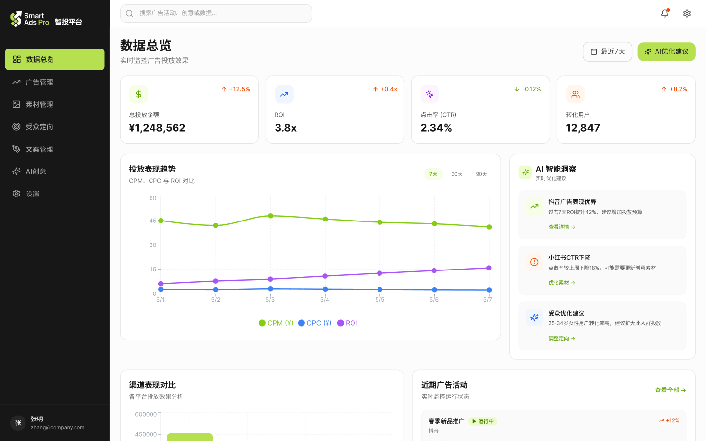
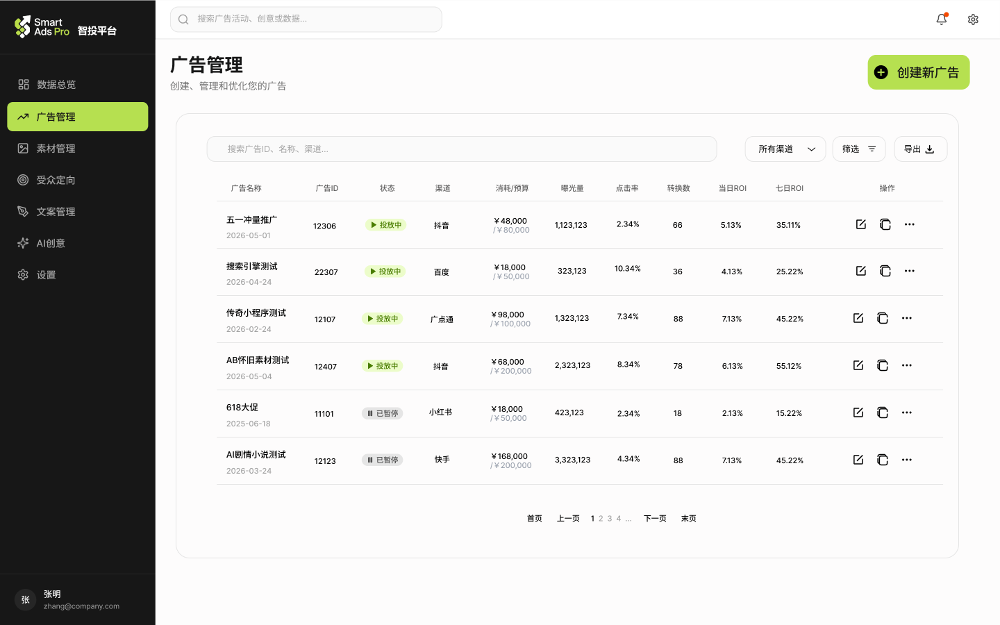
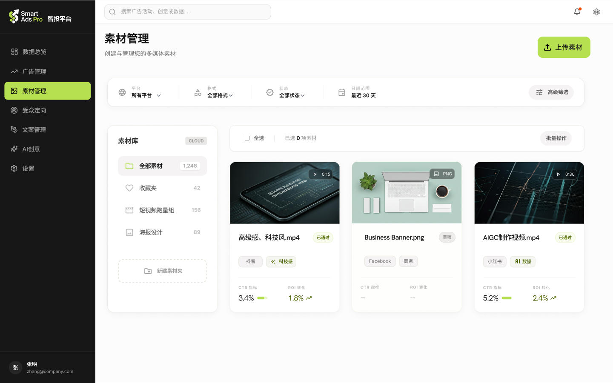
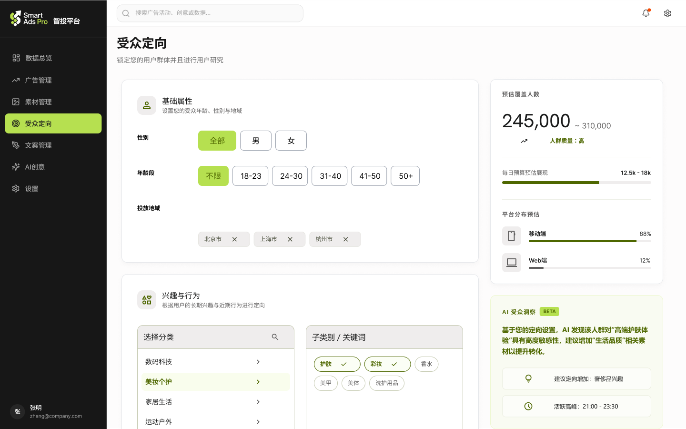
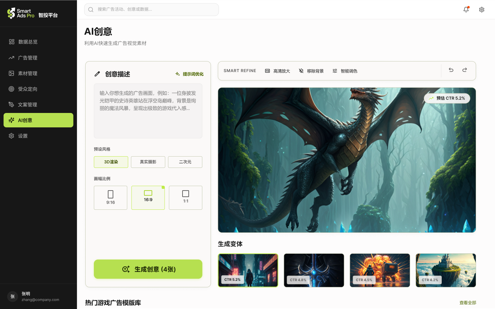

Smart AdsPro





Smart Ads Pro 是一款面向信息流广告团队投放人员以及营销人员的智能广告投放平台，集数据监测、广告管理、素材管理、受众定向与 AI 创意生成于一体，帮助运营团队更高效地优化广告表现与提升投放转化。

攻读艺术科技硕士之前，我长期从事广告投放与效果营销相关工作。在实际工作中，我发现几乎所有依赖信息流投放的企业，都需要一套高效的 B 端广告投放平台，用于实时监测广告数据、优化投放效果，并对创意素材质量进行精细化管理。随着信息流广告逐渐成为数字营销的核心媒介，广告投放后台也从单纯的数据工具，演变为连接策略、创意与商业增长的重要基础设施。
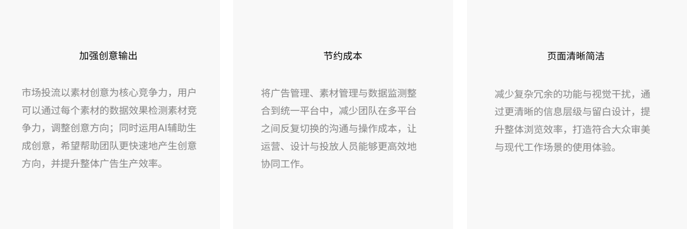
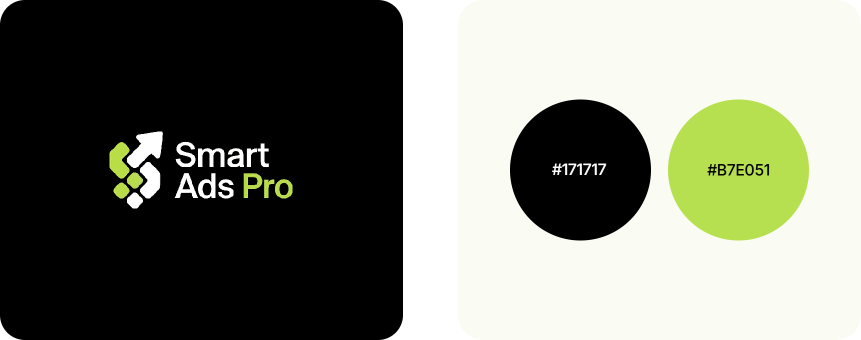
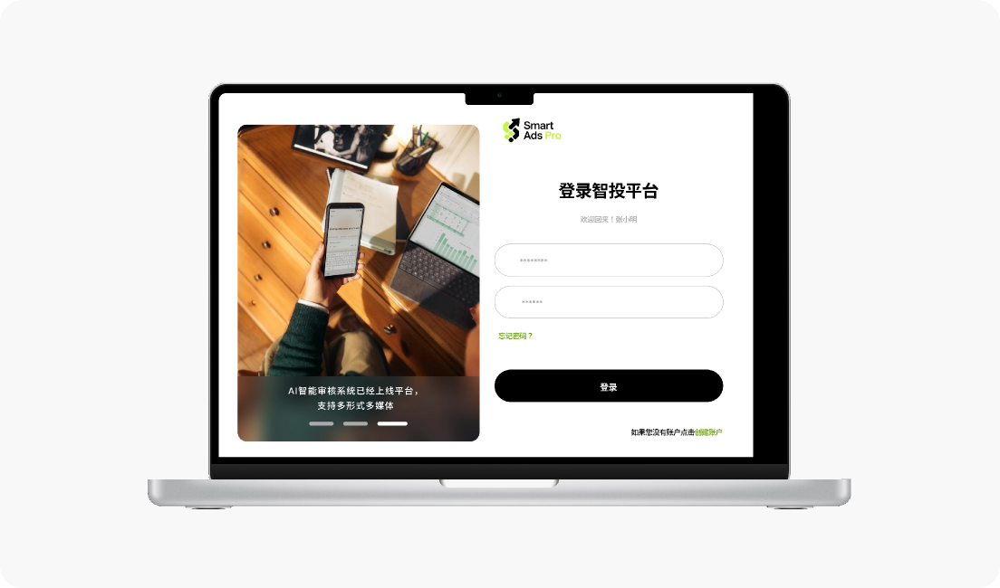
整合广告数据监控、效果分析、渠道对比、智能优化建议等能力，支持用户从宏观到微观掌握投放状态。
提供数据驱动的优化决策支持，降低人工分析成本，提升投放效率与 ROI。数据总览看板可以直观的查看每日的投放数据波动。
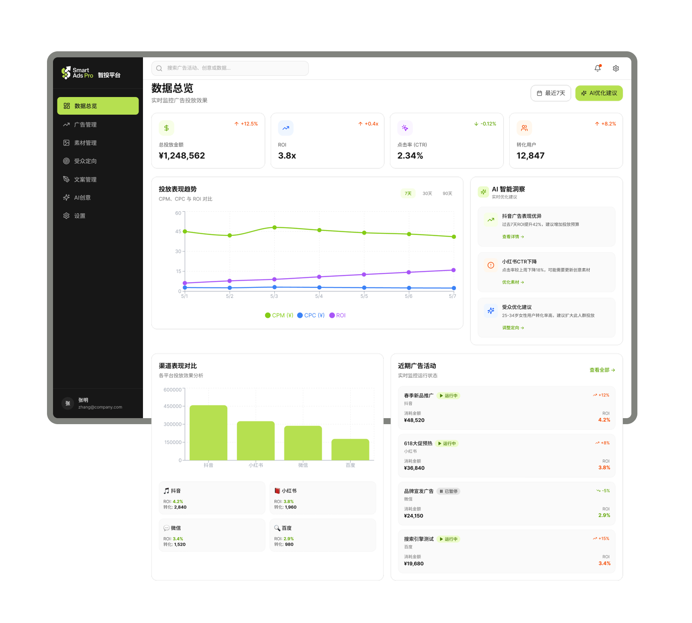
广告投放的人群精细化运营中枢，整合了基础筛选、兴趣定向、相似扩量、效果预估与 AI 优化能力，帮助用户精准定位目标用户，提升广告投放的效率与 ROI。
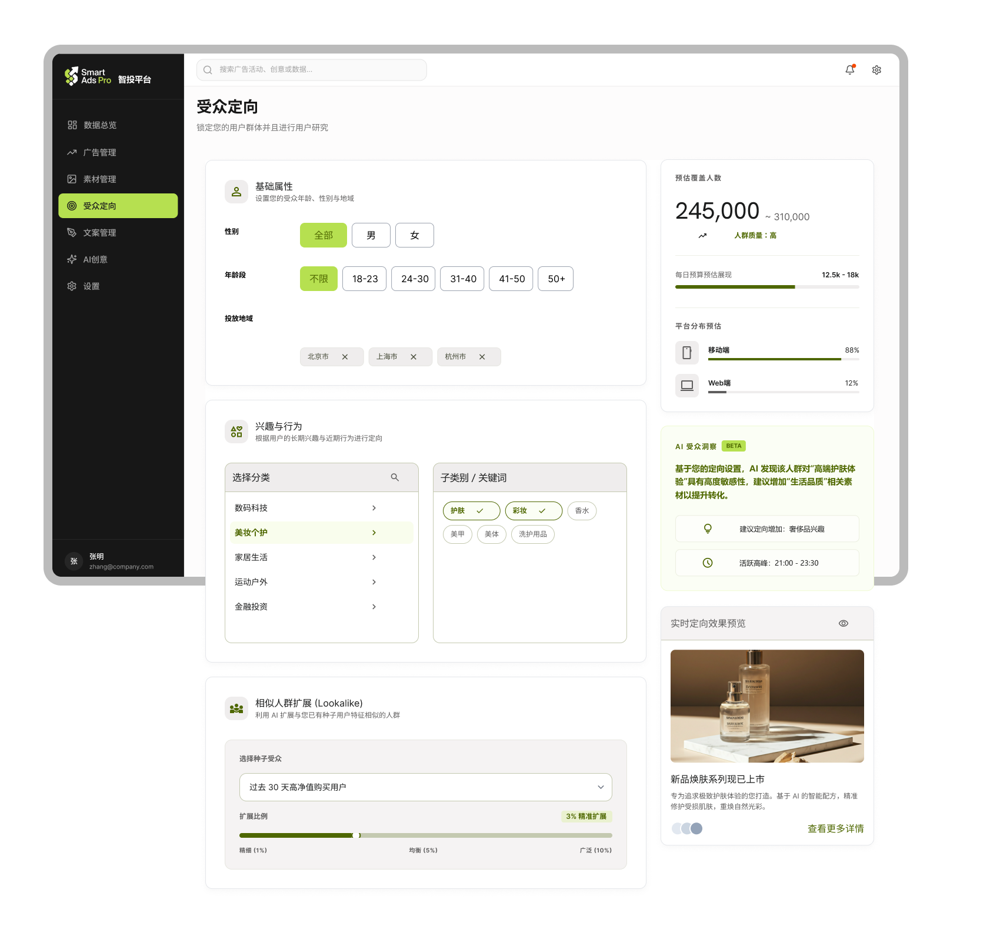
广告管理模块通过清晰的数据表格与状态标签，帮助运营人员实时查看广告表现、监控预算消耗，并快速进行广告编辑与优化操作。
素材管理模块通过卡片化布局与可视化标签系统，帮助运营人员快速浏览、筛选与分析广告素材表现，降低多平台素材管理的复杂度。
AI 创意模块主要用于辅助广告团队快速生成视觉广告素材，通过输入创意描述即可生成多种风格与尺寸的广告图片，并结合 CTR 预估与素材变体推荐，帮助运营人员提升广告创意生产效率与内容测试速度。文案管理模块用于统一管理广告投放文案与 AI 生成内容，帮助运营团队快速整理、筛选与优化不同平台的广告文案素材。
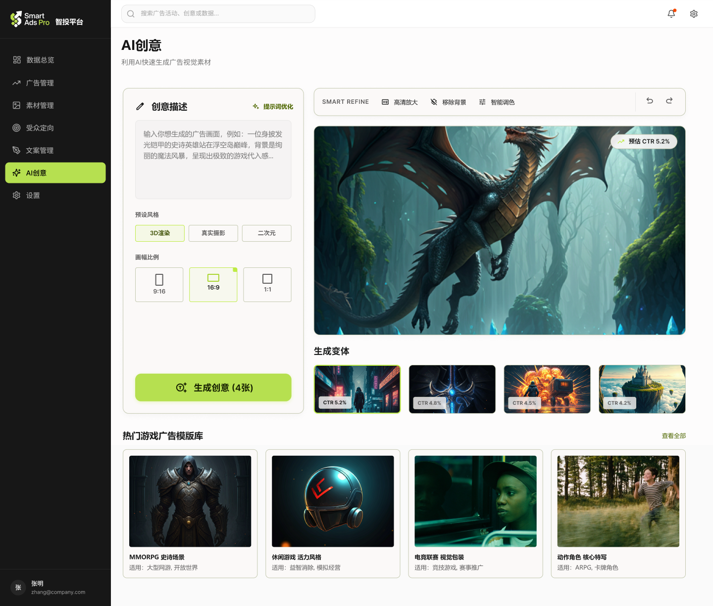
这是AI创意广告生成页面，支持用户通过文字描述 + 预设风格快速生成适配投放的游戏广告素材，并提供智能优化、CTR 预估和模板复用功能，一站式完成广告创意的生成与优化。
广告文案素材的管理中台 + AI 生成工具，帮助用户高效管理文案资产，同时通过 AI 快速产出适配投放的广告文案。
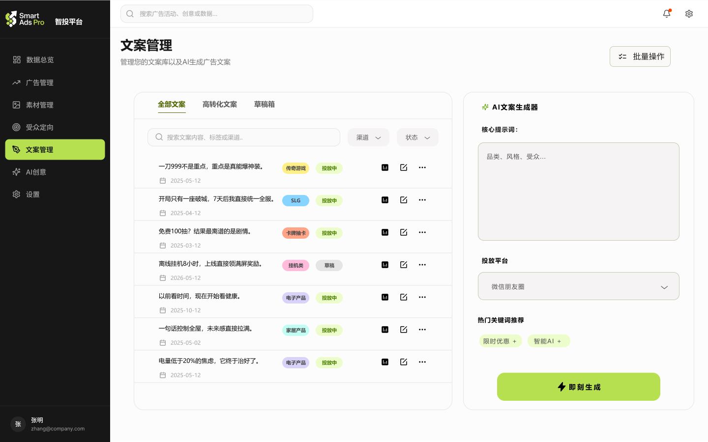